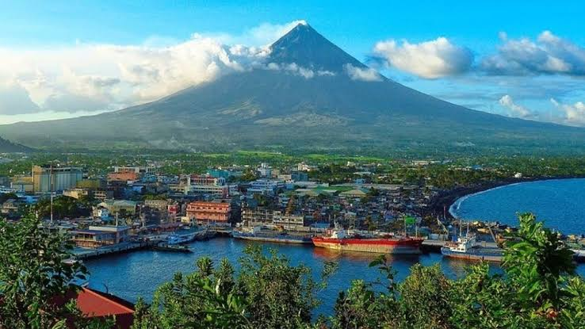
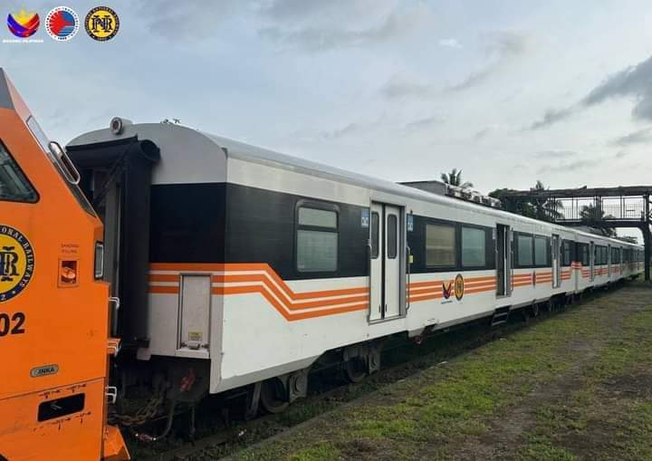
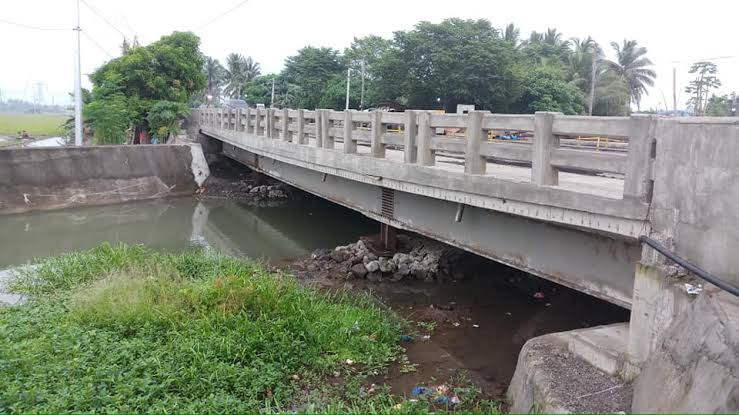
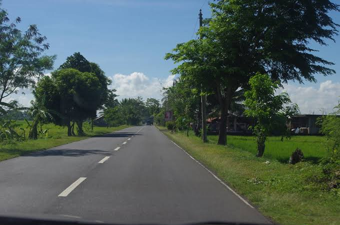

 
Airport
Legazpi City Legazpi Airport
The nearest airport is in Legazpi City Legazpi Airport – about 39.1 kilometres (24.3 mi) from Polangui. Philippine Airlines and Cebu Pacific Air operate in the airport, with daily flights to and from Manila and Cebu. The construction of the soon Polangui Domestic Airport at Barangay Balangibang is still under negotiation.
Seaport
Libon, Pio Duran Port
Polangui is a landlocked municipality, entirely enclosed by land. The nearest ports from Polangui are Pantao Port in Libon, Pio Duran Port in Pio Duran, Legazpi Seaport in Legazpi City, and Tabaco International Seaport in Tabaco City.
Railways
Polangui Railway Station
In March 2012, the 10 1/2-hour Mayon Limited started traveling between Manila and Ligao City, but later ceased operations. In 2016, operation of the PNR Southrail Line resumed with one round trip between Naga City and Legazpi City, and served the town through the Polangui railway station. However, it was also stopped due to issues on maintenance and public safety.
Roads and Bridges
Road Network
Roads in Polangui are classified into:
* National roads
- Daang Maharlika (LZ/AH26)
- Albay West Coast Rd (N638)
- Matacon-Libon-Polangui Jct Rd
- Polangui Poblacion Rd
* Provincial roads
- Pedro Sabido Rd
- Buhi-Polangui Rd
* Municipal roads
* Barangay roads
Mode of access
Vehicles
Polangui can be reached through land transport (by bus) from Manila in about 10 hours, two hours less if the new (Andaya Highway) route is taken. Main routes can be reached through by aircon buses, Garage to Terminal (GT) Vans and FX (location and access to is underway with the new Polangui Terminal), private cars, trimobiles, padyak and motorcycles.
Some bus companies with stations in Polangui are:
* Alps
* Antonina Lines
* Cagsawa Travel & Tourss
* DLTB Co.
* Executive Carriers
* Gold Line Tours, Inc.
* Philtranco
* Raymond Transportation
* RSL Bus Transport Corporation
In order to spur development in the municipality, the Toll Regulatory Board declared Toll Road 5 the extension of South Luzon Expressway. A 420-kilometer, four lane expressway starting from the terminal point of the now under construction SLEX Toll Road 4 at Barangay Mayao, Lucena City in Quezon to Matnog, Sorsogon, near the Matnog Ferry Terminal. On August 25, 2020, San Miguel Corporation announced that they will invest the project which will reduce travel time from Lucena to Matnog from 9 hours to 5.5 hours.